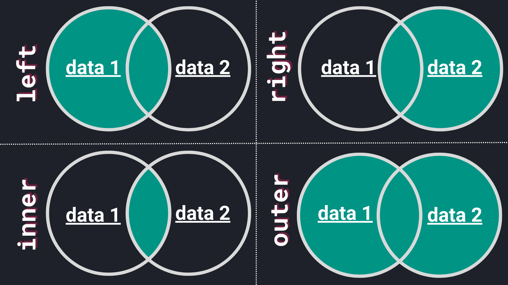

Data Preparation
Preface
Info
Starting with this chapter, we will work with adapted data from:
S. Moro, P. Cortez and P. Rita (2014). A Data-Driven Approach to Predict the Success of Bank Telemarketing1
The publicly available dataset is from a Portuguese retail bank and houses information on direct marketing campaigns (phone calls). Bank customers were contacted and asked to subscribe to a term deposit. Using this practical example, we will explore the realms of:
- Data merging
- Data cleaning
- Data transformation
- Machine learning (with selected algorithms)
- Comparison of model performance
- Model persistence (practical guide on how to save and load machine learning models)
Eventually, you will end up with a model that predicts whether a customer will subscribe to a term deposit or not.
Obtaining the data
Set up a project
As always, we strongly recommend to set up a new project including a virtual environment. We will perform all steps from data merging to saving the model in this project.
If you are having trouble setting up a virtual environment, please refer to the virtual environment creation guide.
Let's dive right in and download both files:
Place the files in a new folder called data. Your project now should look
like this:
Open the files
Before we start, simply open the files with a text editor. Scroll through both files and read a couple of rows to get acquainted with the data.
Read the files
Since we are obviously dealing with two rather large files, we opt to read
them with Python . At the end of this section
we end up with a single (clean!) data set.
Info
Conveniently, in our case the data was already collected, saving us hours
and hours of work. Thus, we can focus on the data preparation step.
Since data is commonly obtained from different sources and in various
different formats, both data sets we have at hand (bank.tsv and bank-social.csv)
will mimic theses scenarios.
To start, we are using pandas for reading and manipulating data. If you
haven't already, install the package within your environment.
Assuming your Jupyter Notebook or script is located at the project's root, we
start by reading the first file bank.tsv.
Although, we can use a simple single-liner to read the file, there are a couple of things to break down:
- We are dealing with a tab-separated file, meaning values within the file
are separated by a tab character (
\t). The fact that we are dealing with a tab-separated file is indicated by the file extension.tsvand the space surrounding the values within the file. - Although we do not have a
csvfile at hand,pandasis versatile enough to handle different separators. Thus, we can utilize thepd.read_csv()function to read the file. Tip: All sorts of text files can be usually read withpd.read_csv(). - Lastly, the
sepparameter is set to\tto indicate the tab separation.
Let's read the second file bank-social.csv.
Open the file bank-social.csv with your text editor. Which separator is used in the file?
Read the second file
Simply read the second file (bank-social.csv) with pd.read_csv()
and specify the appropriate separator. Store the DataFrame in a
variable called data_social.
Duplicated data
Now, with both files in memory, let's examine them closer in order to perform a merge.
| id | age | default | housing | ... | cons.conf.idx | euribor3m | nr.employed | y |
|---|---|---|---|---|---|---|---|---|
| 1 | 30 | no | yes | ... | -46.2 | 1.313 | 5099.1 | no |
| 2 | 39 | no | no | ... | -36.4 | 4.855 | 5191.0 | no |
| 3 | 25 | no | yes | ... | -41.8 | 4.962 | 5228.1 | no |
| 4 | 38 | no | unknown | ... | -41.8 | 4.959 | 5228.1 | no |
| 5 | 47 | no | yes | ... | -42.0 | 4.191 | 5195.8 | no |
The rows represent customers and the columns are features of the
customers. The column y indicates whether a customer subscribed to a
term deposit or not. Customers are uniquely identified by the id
column. Later on, we will have a closer look at the attributes when
modelling the data.
| id | job | marital | education |
|---|---|---|---|
| 2178 | technician | married | professional.course |
| 861 | blue-collar | single | professional.course |
| 3020 | technician | married | professional.course |
| 2129 | self-employed | married | basic.9y |
| 3201 | blue-collar | married | basic.9y |
Again, each row represents a customer (uniquely identified with id).
The remaining columns job, marital, and education are social
attributes.
Let's examine the shape of both DataFrames as well.
The output indicates that data contains more observations (customers) than
data_social. However, first and foremost it is good practice to check
for duplicated data.
data contains 411 duplicated rows. These can be removed easily:
Check for duplicates
Check for duplicates in data_social and remove them if necessary.
How many duplicates were present in data_social?
A note on pd.DataFrame.drop_duplicates()
By default, the method pd.DataFrame.drop_duplicates() removes
all duplicated rows. However, you can pass an argument to subset in
order to remove duplicates based on specific columns. For example, if we
want to drop duplicates based on the id column, we can do so by:
subset can also be all list of multiple columns.
Merge methods
To combine both data sets we will use the pd.DataFrame.merge()
method to
Merge DataFrame or named Series objects with a database-style join
Looking at the how parameter we are presented with 5 (!) different options
to perform a merge. The most common ones are:
"left""right""inner""outer"
In order to be able to choose the appropriate method, we need to break them down:

- Left join: The resulting
DataFramewill contain all rows from the leftDataFrame(data 1) and the matched rows from the rightDataFrame(data 2). - Right join: The resulting
DataFramewill contain all rows from the rightDataFrame(data 2) and the matched rows from the leftDataFrame(data 1). - Inner join: The resulting
DataFramewill contain only the rows that have matching values in bothDataFrames. - Outer join: The resulting
DataFramewill contain all rows from bothDataFrames.
Perform merges
To get further acquainted with merge methods, we simply perform them all.
But first, we need to pick a column which uniquely identifies a row (customer)
in both data sets. Conveniently, we have the id column. Regardless
of the merge we perform, the parameter on requires a column to match the
rows (in our case we set on="id").
left_join = data.merge(data_social, on="id", how="left")
right_join = data.merge(data_social, on="id", how="right")
inner_join = data.merge(data_social, on="id", how="inner")
outer_join = data.merge(data_social, on="id", how="outer")
A closer look
To comprehend on of these merges, have a look at the resulting shape and the
identifiers the DataFrame contains. Let's examine the right_join:
equal_nrows = len(data_social) == len(right_join)
print(f"Merged data has the same number of rows as data_social: {equal_nrows}")
all_ids_present = data_social["id"].isin(right_join["id"]).all()
print(f"All identifiers from data_social are present? {all_ids_present}")
Merged data has the same number of rows as data_social: True
All identifiers from data_social are present? True
A breakdown of the code snippet:
-
equal_nrowsindicates that all rows fromdata_socialare present inright_join.Info
len(data_social)is equivalent todata_social.shape[0]. -
To verify that
right_joincontains all identifiers ofdata_social, we make use of thepd.Series.isin()method. This method checks whether each element of aSeriesis contained in anotherSeries.Info
pd.Series.all()returnsTrueif all elements in theSeriesareTrue.
Counter check
Extend, the previous code snippet:
- Do the number of rows from
dataandright_joinmatch? - Are all identifiers from
datapresent inright_join?
Our examinations should conclude that right_join contains all
rows/customer data from data_social and solely the matching records
from data.
Examine remaining merges
Look at the shapes of the remaining merges (left_join,
inner_join, outer_join) to get a better understanding of the
different merge methods and its results.
Compare the shape of each merge with the shapes of data and
data_social.
Final merge (application)
With a solid understanding of different merge methods, we revisit our initial task to join both data sets. But how can we choose the appropriate method? The short answer; it depends on your data and task at hand. There is no method that fits all scenarios.
SQL Explained
byu/UnorthodoxPrimitive inProgrammerHumor
Since we are eventually fitting a machine learning model on the data, we are
interested in customer data that is present in both data sets. I.e., we
want to prevent the introduction of additional missing values that would
result from an outer join. Furthermore, a left join would leave us with missing
attributes from social_data. The same applies to a right join, just vice
versa.
Long story short, we opt for an "inner" merge (or join) which
leaves us with only the customers that are present in both data sets. The
final merge is as simple as:
Let's examine the shape of the merged data set.
We end up with 3928 customers that are present in both data sets.
Lastly, we can write the merged data set to a new file. Let's use a common
format csv with the default , as separator.
With index=False, we do not
Write row names (index).
Recap
Using the bank marketing data, we have seen how to find and remove duplicated data, explored different merge methods and ended up with a single data set.
In the next chapter, we will explore this data further, look for missing values and perform some basic data transformations.
-
Decision Support Systems, Volume 62, June 2014, Pages 22-31: https://doi.org/10.1016/j.dss.2014.03.001 ↩